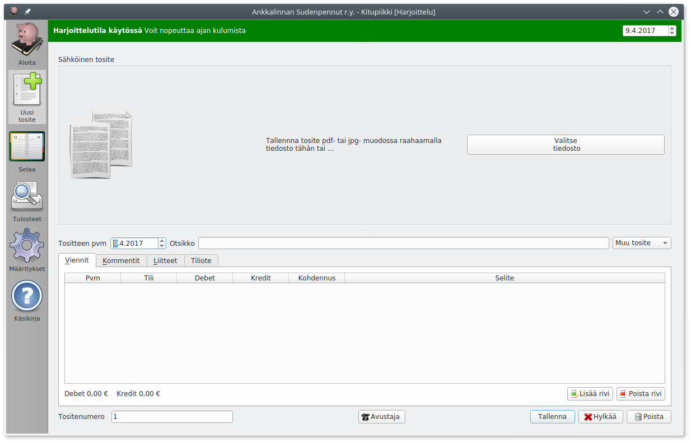
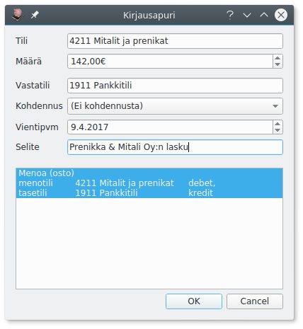

Kirjaaminen

Kirjaaminen Avustajalla
Useimmat tavanomaiset kirjaukset kuten ostot, myynnit, nostot pankkitililtä jne. kirjaat helpoiten käyttämällä Apuria.
- Jos tosite on tietokoneella (pdf- tai jpg-tiedostona) tuo se joko raahaamalla se Sähköinen tosite-kohtaan tai Valitse tiedosto-napilla.
- Täytä tositteen päivämäärä ja otsikko.
- Valitse tositelaji.
- Käynnistä Avustaja joko Avustaja-napista tai painamalla Enter. 
- Valitse kirjaustili. Voit joko kirjoittaa Tili-kohtaan suoraan tilinumeron tai aloittaa kirjoittamalla tilin nimeä, jolloin pääset valitsemaan tilin luettelosta. Painamalla välilyöntiä pääset kaikkien tilien luetteloon.
- Syötä määrä ja varmista, että vastatili, vientipäivä ja selite on oikein. Valitse tarvittaessa kohdennus.
- Varmista Apurin ikkunassa alinpana olevasta ruudusta, että kirjaus menee oikein, ja paina Ok (tai Enter)
- Kirjauksen tiedot tulevat Viennit-välilehdelle. Jos tositteella on useampia vientejä, käynnistä Avustaja uudelleen.
- Lisää tarvittaessa vielä Kommentit-välilehdelle tarkemmat selvitykset.
- Jos kirjaus perustuu paperitositteeseen, merkitse Tositenumero paperiseen tositteeseen.
- Tallenna kirjaus painamalla Tallenna.
Mikä päivämäärä?
Kirjanpito voidaan tehdä suorite-, maksu- tai laskuperusteisesti. Yksinkertaisinta usein on pitää kirjanpitoa maksuperusteisesti eli merkitä se päivämäärä, jolloin maksu on suoritettu. Yhdistyksiä lukuun ottamatta maksuperustainen kirjanpito on oikaistava tilinpäätöksessä suoriteperustaiseksi.
Kirjaaminen ilman Apuria
Voit tehdä kirjauksen myös ilman Apuria valitsemalla Viennit-välilehdellä Lisää rivi (tai painamalla Insert).
Sarakkeeseen Tili voit syöttää tilinumeron tai kirjoittaa tilin nimen alkua. Kohdennus on käytettävissä vain, jos tiliksi on valittu menotili tai tulotili.
Kommentit
Kommentit-välilehdelle kirjoitetaan tarkemmat tiedot tositteesta. Hankinnasta voidaan esimerkiksi kertoa, mitä varten se on tehty ja mihin päätökseen se perustuu (esim. yhdistyksessä viittaus hallituksen pöytäkirjaan).
Muistiotositteessa selitys voidaan kirjoittaa Kommentti-välilehdelle, jolloin tositteeseen ei tule liitettä (esimerkiksi poistojen tai muun tilinpäätösviennin perusteluina).
Liitteet
Tositteeseen voi liittää pdf- tai jpg-tiedostoja. Kuvatiedostot muunnetaan arkistoa varten pdf-muotoon.
Ensimmäisen liitteen (sähköinen tosite) voit liittää suoraan Sähköinen tosite-kohdassa raahaamalla tiedoston tai Valitse tiedosto-napista.
Voit lisätä enemmän tiedostoja Liitteet-välilehdeltä Lisää-napista. Voit myös poistaa liitteitä, muuttaa liitteen nimeä (kaksoisnapsauttamalla nimeä) tai avata liitteen pdf-katseluohjelmaan tulostamista varten.
Lisäliite voi olla esimerkiksi hankintapäätös, tarjouspyyntö, lähetyslista tai muu tarpeellinen asiakirja.
Voit myös tehdä tositteen, jossa on liite ja mahdollisesti kommentteja ilman yhtään vientiä, jos jokin asiakirja on tarpeen liittää sähköiseen arkistoon. Tällainen voi olla tarpeen esimerkiksi todennettaessa tilinpäätöksen liitetietoja liitetietotositteella.
Tiliotteen kirjaaminen
Tiliote-välilehdeltä voit merkitä, että tosite on tiliote. Tällöin sähköinen arkisto lisää tilille tällä ajanjaksolla tehtyihin kirjauksiin linkin tiliotteeseen. Tiliotemerkintä tehdään automaattisesti, jos tiliote on määritelty tositelajin asetuksissa.